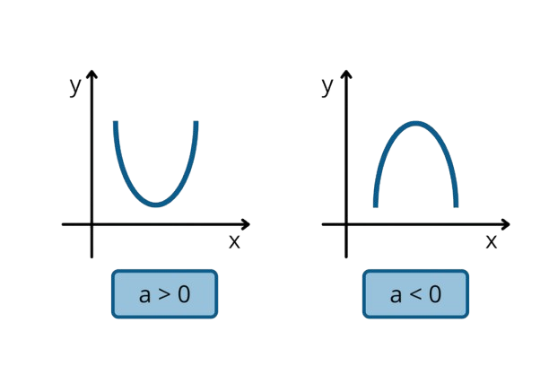

Materi Fungsi Kuadrat
Pengertian
Pengertian dari fungsi kuadrat adalah sebuah fungsi polinomial atau suku banyak di mana pangkat tertinggi dari
variabel atau peubahnya adalah 2. Maka, bentuk umum dari fungsi kuadrat mendekati persamaan kuadrat. Selain fungsi,
ada juga ciri-ciri dari fungsi kuadrat, yakni sebagai berikut:
- Bentuk umumnya yaitu f(x) = ax² + bx + c dengan nilai a tidak boleh sama dengan nol.
- Fungsi kuadrat paling sederhana adalah y = x² dengan derajat tertinggi adalah 2.
-
Apabila diplotkan dalam sistem koordinat kartesian, maka bentuk grafiknya adalah parabola. Bentuknya bisa
beragam, mulai dari landai hingga curam. Akan tetapi, bentuk dasarnya adalah huruf U yang dapat membuka
ke atas atau ke bawah tergantung nilai a.
- Memiliki titik balik minimum atau maksimum.
- Terdapat sumbu simetri yang memotong parabola secara vertikal menjadi dua bagian.
- Memiliki diskriminan dengan rumus D = b² - 4ac.
Rumus Fungsi Kuadrat
Apakah Sobat Pijar tahu, jika salah satu fungsi dalam ilmu matematika yang mirip dengan bentuk persamaan kuadrat adalah fungsi kuadrat?
Misalnya, bentuk pada persamaan kuadrat adalah:
ax² + bx + c = 0
Nah, untuk rumus persamaan fungsi kuadrat adalah sebagai berikut:
f(x) = ax² + bx + c
Dengan keterangan sebagai berikut:
- f(x): Fungsi kuadrat.
- a dan b: Koefisien.
- c: Konstanta.
- x: Variabel.
- a: Tidak boleh sama dengan 0.
1. Diskriminan
Diskriminan digunakan untuk menentukan jumlah dan jenis akar-akar dari persamaan kuadrat. Nilai diskriminan dihitung dengan rumus berikut:
D = b² - 4ac
Diskriminan ( D ) menentukan jenis akar yang dimiliki persamaan kuadrat:
- Jika ( D > 0 ), persamaan memiliki dua akar nyata yang berbeda.
- Jika ( D = 0 ), persamaan memiliki satu akar nyata (akar ganda).
- Jika ( D < 0 ), persamaan tidak memiliki akar nyata, tetapi memiliki akar imajiner.
Contoh:
Untuk persamaan
y = x² - 4x + 3, diskriminannya dihitung sebagai berikut:
D = (-4)² - 4(1)(3) = 16 - 12 = 4
Karena ( D > 0 ), persamaan ini memiliki dua akar nyata yang berbeda.
2. Rumus Akar Kuadrat (Penyelesaian Persamaan Kuadrat)
Untuk menyelesaikan persamaan kuadrat ax² + bx + c = 0, kita dapat menggunakan rumus kuadrat sebagai berikut:
x = (-b ± √D) / 2a
Di mana ( D ) adalah diskriminan yang dihitung dengan rumus D = b² - 4ac. Simbol ( ± ) menunjukkan dua solusi untuk ( x ), satu dengan tanda positif dan satu dengan tanda negatif.
Contoh:
Untuk persamaan
x² - 4x + 3 = 0, kita sudah mengetahui bahwa
D = 4. Maka akar-akar persamaan tersebut adalah:
x = -(-4) ± √4 / 2(1) = 4 ± 2 / 2
Solusi:
x₁ = (4 + 2) / 2 = 3
x₂ = (4 - 2) / 2 = 1
Jadi, akar-akar dari persamaan tersebut adalah
x = 3 dan
x = 1.
Grafik Fungsi Kuadrat
Nah, kini saatnya Sobat Pijar mengetahui apa itu grafik fungsi kuadrat, yaitu suatu grafik yang berguna untuk menguraikan gambaran dari fungsi kuadrat.
Ciri-Ciri Grafik Fungsi Kuadrat
- Memiliki grafik yang simetris.
- Bentuknya identik seperti parabola.
- Hanya memiliki titik minimum saja atau titik maksimum saja, tidak keduanya.
-
Adanya f(x) = y yang merupakan variabel terikat. Sementara itu, variabel bebasnya adalah x, dan
a serta b adalah koefisien, di mana variabel dengan pangkat paling tinggi adalah dua.
1.Sifat Grafik Fungsi Kuadrat
Grafik fungsi kuadrat memiliki beberapa sifat tergantung pada nilai koefisien a, yaitu:
-
Grafik Terbuka Ke Atas:
Jika a > 0, maka grafik parabola terbuka ke atas. Bentuknya seperti huruf U.
-
Grafik Terbuka Ke Bawah:
Jika a < 0, maka grafik parabola terbuka ke bawah. Bentuknya seperti huruf ∩.
Berikut adalah ilustrasi grafik fungsi kuadrat yang menunjukkan sifat-sifatnya:

2. Titik Puncak
Sifat ini terlihat pada grafik yang mengarah ke bawah atau ke atas. Jika grafik mengarah ke bawah, maka titik puncaknya adalah titik maksimum. Sebaliknya, jika grafik mengarah ke atas, titik puncaknya adalah titik minimum.
Rumus untuk menentukan titik puncak grafik fungsi kuadrat yang memiliki bentuk umum y = ax² + bx + c adalah:
(xp, yp) =
(−b / 2a, −D / 4a)
Keterangan:
- xp: posisi titik puncak pada sumbu x.
- yp: posisi titik puncak pada sumbu y.
- a: koefisien dari x².
- b: koefisien dari x.
- D: diskriminan, yaitu D = b² - 4ac.
3. Sumbu Simetri
Grafik fungsi kuadrat bersifat simetris karena adanya sumbu simetri. Sumbu ini bertindak sebagai garis cermin pada grafik dan membagi grafik menjadi dua bagian yang sama. Rumus untuk menentukan sumbu simetri adalah:
x = −b / 2a
4. Titik Potong Sumbu Y
Titik potong sumbu Y adalah titik di mana grafik memotong sumbu Y. Pada grafik fungsi kuadrat y = ax² + bx + c, titik potong sumbu Y adalah di (0, c).
5. Titik Potong Sumbu X
Titik potong sumbu X adalah titik di mana grafik memotong sumbu X. Untuk menentukan titik potong ini, gunakan rumus:
y = a(x − x₁)(x − x₂)
Di mana x₁ dan x₂ adalah akar-akar persamaan kuadrat.
Cara Menyusun Grafik Fungsi Kuadrat
- Tentukan tiga titik koordinat menggunakan persamaan y = ax² + bx + c.
- Identifikasi titik potong sumbu X dan Y.
-
Aplikasikan rumus y = a(x − x₁)(x − x₂) untuk menemukan titik-titik pada grafik, atau gunakan rumus y = a(x − x₁)² + yp untuk mengetahui bentuk parabola.
Contoh Soal dan langkah Penyelesaian Fungsi Kuadrat
Soal 1
Selesaikan persamaan kuadrat berikut:
f(x) = x² + 3x + 2
Penyelesaian
-
Hitung diskriminan (D):
D = b² - 4ac
D = 3² - 4 * 1 * 2
D = 9 - 8 = 1
-
Titik balik (vertex):
x = -b / 2a = -3 / (2 * 1) = -1.50
y = f(-1.5) = (-1.5)² + 3(-1.5) + 2 = -0.25
Titik balik adalah (-1.50, -0.25)
-
Cari akar-akar persamaan:
- x₁ = (-b + √D) / 2a = (-3 + √1) / 2 = -1.00
- x₂ = (-b - √D) / 2a = (-3 - √1) / 2 = -2.00
Kesimpulan: Akar-akar persamaan adalah x₁ = -1.00 dan x₂ = -2.00.
Soal 2
Selesaikan persamaan kuadrat berikut:
f(x) = 2x² + 4x + 1
Penyelesaian
-
Hitung diskriminan (D):
D = b² - 4ac
D = 4² - 4 * 2 * 1 = 16 - 8 = 8
-
Titik balik (vertex):
x = -b / 2a = -4 / (2 * 2) = -1.00
y = f(-1) = 2(-1)² + 4(-1) + 1 = -1.00
Titik balik adalah (-1.00, -1.00)
-
Cari akar-akar persamaan:
x₁ = (-b + √D) / 2a = (-4 + √8) / 4 = -0.29
x₂ = (-b - √D) / 2a = (-4 - √8) / 4 = -1.71
Kesimpulan: Akar-akar persamaan adalah x₁ = -0.29 dan x₂ = -1.71.
Soal 3
Selesaikan persamaan kuadrat berikut:
f(x) = -x² + 2x - 1
Penyelesaian
-
Hitung diskriminan (D):
D = b² - 4ac
D = 2² - 4 * -1 * -1
D = 4 - 4 = 0
-
Titik balik (vertex):
x = -b / 2a = -2 / (2 * -1) = -1.00
y = f(-1) = -(-1)² + 2(-1) - 1 = -2.00
Titik balik adalah (-1.00, -2.00)
-
Cari akar-akar persamaan:
x₁ = (-b + √D) / 2a = (-2 + √8) / 2(-1) = 0.41
x₂ = (-b - √D) / 2a = (-2 - √8) / 2(-1) = -2.41
Kesimpulan: Akar-akar persamaan adalah x₁ = 0.41 dan x₂ = -2.41.